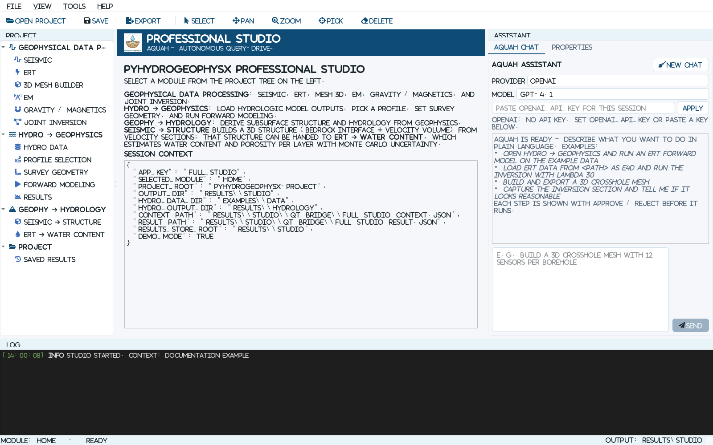
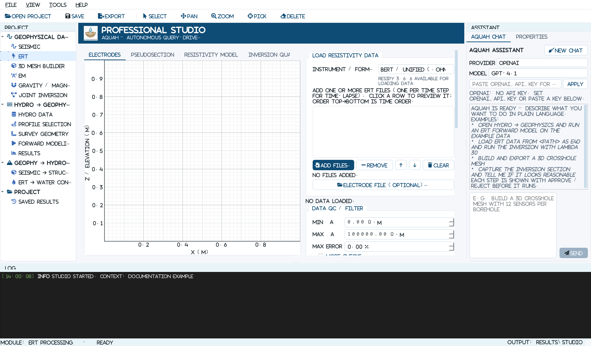

Desktop Studio (Qt)#
PyHydroGeophysX ships two complementary front ends:
The Streamlit web app (Agent Web App) is the agent, report, tutorial, and deployment portal. It runs in a browser and can be hosted remotely.
The Qt desktop studio (
PyHydroGeophysX/qt_apps/) is a local desktop application for hands-on mouse interaction: data processing, first-arrival picking, electrode geometry editing, hydro-to-geophysics profile selection, mesh building, and forward modeling and inversion.
The two exchange small JSON files on disk (the “bridge”), so you can set up a run in the browser and finish the interactive work on the desktop.
Studio at a Glance#
{kind=link}

The Studio home screen. The project tree is on the left, the active scientific module is in the center, AQUAH Chat and Properties are on the right, and the activity log is at the bottom.#
The main window has six working areas:
Project tree – select Seismic, ERT, 3D Mesh Builder, EM, Gravity / Magnetics, Hydro -> Geophysics, Seismic -> Structure, or ERT -> Water Content. Multiple tree entries under Hydro -> Geophysics open different stages of the same guided module.
Module workspace – plots, maps, model viewers, and step-by-step controls for the selected method.
AQUAH Chat / Properties – ask the assistant to prepare an action, or inspect the current context and module results as JSON.
Toolbar – Open, Save, Select, Pan, Zoom, Pick, Delete, and Export. Pick and Delete act on compatible plots in the active module.
Log – progress messages, loaded-file summaries, warnings, output paths, and backend errors. Check this panel first when a run does not start.
Status bar – the current module and whether the interface is ready or busy.
Download the Desktop App#
Prebuilt bundles for Windows and macOS are published on GitHub Releases. Each platform has two variants, so you can pick what fits your machine:
Download the Desktop Studio (Windows / macOS)
Bundle |
What it includes |
|---|---|
|
Windows. Load, view, QC, pick, edit geometry, and export data in every module. Small download; starts fast. |
|
Windows. Everything in light, plus the geophysics engines (PyGIMLi, SimPEG, PyVista/VTK): forward modeling, inversion, and the 3D mesh viewer work out of the box. Much larger download. |
|
macOS. Same feature set as the Windows light build. |
|
macOS. Same feature set as the Windows full build. |
After unzipping, run PyHydroGeophysX-Studio.exe inside the extracted folder
(Windows) or open PyHydroGeophysX-Studio.app (macOS).
Note
In the light bundles the heavy engines are left out on purpose, so forward modeling, inversion, and the 3D mesh viewer show an install message instead of running. Choose the full bundle, or install from source, for the complete feature set.
Note
The macOS bundles are not code-signed. If macOS blocks the first launch,
right-click the app and choose Open once, or clear the quarantine flag with
xattr -cr PyHydroGeophysX-Studio.app.
Install and Run from Source#
The studio needs PySide6 and pyqtgraph in addition to numpy and pandas:
pip install -r requirements-desktop.txt
# or, as an extra:
pip install "pyhydrogeophysx[desktop]"
Optional packages add features:
pygimli: real forward modeling and inversion (ERT, SRT, TDEM, FDEM, gravity). Without it, the Hydro module still exports a survey configuration JSON.pyvista,pyvistaqt,vtk: the 3D mesh viewer.simpeg: gravity and magnetics 3D inversion.scipy: gridding and interpolation in several modules.
Launch the studio:
python -m PyHydroGeophysX.qt_apps.launcher
# open directly into a module:
python -m PyHydroGeophysX.qt_apps.launcher --module hydro_geophysics
# attach to a bridge context written by Streamlit:
python -m PyHydroGeophysX.qt_apps.launcher --context results/streamlit_workflow/qt_bridge/full_studio_context.json
If the package is installed (pip install pyhydrogeophysx[desktop]), the
pyhydrogeophysx-studio command starts the same application.
Start Without a Terminal#
examples/start_studio.bat opens the studio from a double-click in
Explorer, the desktop counterpart of start_webapp.bat. It needs no activated
environment and no PATH entry: it looks for a Python that already has PySide6
and pyqtgraph, checking its own reusable environment, PYHYDROGEOPHYSX_PYTHON,
an inherited conda environment, the py launcher, and the usual per-user conda
installation folders. Finding none, it creates .venv-studio beside the
repository and installs the desktop extra there, leaving existing environments
untouched. That first run takes several minutes; later runs reuse it.
The console window it opens is the log: startup messages and any error stay visible there, and it closes when the studio does.
examples/start_studio.sh is the macOS / Linux counterpart. Copy it to
start_studio.command to make it double-clickable from Finder. Unlike the
Windows launcher it installs nothing, reporting the pip install command
instead when the dependencies are missing.
Both forward their arguments, so a shortcut can open a specific module:
start_studio.bat --module hydro_geophysics
Note
The desktop extra installs the interface only. Two groups are separate
because they are large: desktop-3d (pyvista, pyvistaqt, vtk)
for the 3D viewers, and geophysics for forward modeling and inversion.
Without them those panels show an install message and the rest of the
studio is unaffected.
pip install "pyhydrogeophysx[desktop,desktop-3d,geophysics]"
Choosing pip or conda#
Install with whichever tool already manages the packages in the environment.
That is not always the tool that created it: an environment made with conda
create whose scientific packages were then installed with pip is a pip
environment for this purpose. Ask it directly:
conda list numpy
pypi in the channel column means pip owns the packages, so use the pip
install line above. A conda channel such as conda-forge means conda owns
them, so install the 3D stack from conda-forge instead:
conda install -c conda-forge pyvista pyvistaqt
The distinction matters most for vtk. Reaching for the other tool installs a
second VTK build alongside the first, and which one loads then depends on path
order. PySide6 also ships its own Qt, so pulling qt6-main in from conda-forge
next to a pip-installed PySide6 puts two Qt runtimes in one environment.
Module keys for --module: home, seismic, ert, mesh3d, em,
gravmag, hydro_geophysics, geo_hydrology, seismic3d.
Your First Studio Run: ERT Inversion#
This walkthrough uses the ERT module because it demonstrates the complete
Studio pattern: load, inspect, QC, configure, run, evaluate, and export. From
a source checkout, use examples/data/ERT/Bert/fielddataline2.dat. You can use
your own BERT/unified, E4D, Syscal, or other supported resistivity file instead.
{kind=link}

The ERT Processing module before a file is loaded. Data and result tabs are on the left; loading, filtering, inversion, editing, and export controls are in the scrollable center panel.#
Step 1 – open the ERT module#
Select Geophysical Data Processing > ERT in the project tree, or launch directly with:
python -m PyHydroGeophysX.qt_apps.launcher --module ert
Step 2 – load and inspect data#
Under Load resistivity data, select the matching Instrument / format. For the bundled file, choose BERT / Unified (.ohm/.dat).
Click Add files… and select one file. Loading runs in a worker thread; the UI remains responsive and the Log reports the number of electrodes and measurements.
Use the Electrodes tab to check positions and elevation. Use Pseudosection to inspect spatial coverage and apparent-resistivity outliers.
If electrode positions are stored separately, click Electrode file (optional)…. The Studio accepts an
x, ztable.
Step 3 – apply QC filters#
Set Min rhoa, Max rhoa, and optionally Max error, then click Apply filter. A Max error value of zero disables the error filter. The Log reports how many measurements were retained and removed. Click Reset to return to the original loaded data before trying different thresholds.
Do not use a narrow resistivity range simply to make a smooth-looking plot. Check suspicious points against acquisition notes, reciprocal error, contact resistance, and neighboring measurements before deleting them.
Step 4 – configure and run the inversion#
The defaults provide a reasonable first diagnostic run:
Lambda = 20 controls spatial smoothness. Increase it for a smoother model; decrease it only when the data quality and coverage justify more structure.
Max iterations = 15 limits the Gauss-Newton iterations.
Relative error = 0.05 assigns a 5% data error for weighting.
Mesh quality = 34 controls the inversion triangulation.
Click Run inversion. Follow progress in the bottom Log. When the run finishes, inspect:
Resistivity model for the recovered section and coverage-aware opacity;
Inversion quality for observed-versus-predicted behavior and convergence;
the Log for the final chi-squared value and saved intermediate paths.
Step 5 – edit geometry and export#
Use Add electrode (click to place) or Edit (click select, click move) only when the geometry needs correction. Right-click an electrode to delete it or change its label. Then export one or more of:
Export electrode file… for the corrected coordinate table;
Export survey geometry JSON… for a reusable survey definition;
Export resistivity model… for
model_cells.csv,.npy, PyGIMLi.bms, and VTK files.
File > Export Results… (Ctrl+E) reaches the same exports without
hunting for the button that belongs to the tab you are on. It asks the open
module what it can write; when there is more than one answer it offers a choice.
Time-Lapse ERT#
The ERT loader also manages an ordered time series:
Click Add files… and select two or more ERT files. Each file represents one time step.
Verify that the list is chronological. Use the up and down arrow buttons to reorder selected rows. Clicking a row previews that time step.
Check Time-lapse (multiple ERT files). The temporal controls appear.
Set Alpha (temporal), then choose L2 for smooth changes, L1 for blockier changes, or L1L2 for the hybrid formulation.
For long sequences, enable Windowed (sliding window) and choose a window size, or enable Low memory (sparse). Low-memory mode is also selected automatically for sufficiently large problems.
Click Run time-lapse inversion. After completion, select time steps in the Resistivity model tab and click Export results (VTK + npy + mesh)… to save combined and per-step VTK files,
final_models.npy, the mesh, acquisition times, and the result figure.
Module-by-Module Workflows#
Each module follows the same left-to-right logic. The shortest reliable path through each one is summarized below.
Module |
Recommended sequence |
Main outputs |
|---|---|---|
Seismic Processing |
Load a gather; load positions/topography if available; set shot and receiver geometry; adjust gain, clipping, polarity, normalization, and AGC; auto-pick or manually pick first arrivals; inspect the Travel-time tab; run SRT inversion. |
Picks CSV, PyGIMLi travel-time |
3D Mesh Builder |
Choose surface-grid, borehole, or crosshole geometry; select mesh engine and topography; set domain and refinement; click 1. Preview sensors; then 2. Generate mesh; inspect the 3D viewer. |
BMS, VTK, sensor CSV, and a reusable survey/mesh configuration. |
EM Processing |
Select FDEM or TDEM; load one or multiple soundings; load line geometry when available; confirm system geometry; configure the 1D Occam inversion; click Run inversion; compare Sounding, Resistivity model, and Inversion quality tabs. |
Recovered model |
Gravity / Magnetics |
Load |
Corrected/QC data, density or susceptibility model, NPZ/VTK, and convergence history. |
Hydro -> Geophysics |
Data: use example/context data or select the hydrologic-output folder. Profile: pick two map points. Methods: select ERT, SRT, EM, or gravity. Parameters: review petrophysics and survey settings. Run: confirm the readiness checklist and run forward modeling. |
Extracted profile, survey configurations, synthetic responses, models, and figures for each selected method. |
Seismic -> Structure |
Load velocity sections and line coordinates; set interface threshold; preview the first interface; configure interpolation/grid options; check Readiness; click Build 3D model. |
Bedrock surface, 3D velocity/structure volume, configuration JSON, and a direct handoff to ERT -> Water Content. |
ERT -> Water Content |
Load a model folder containing |
Mean, standard deviation, percentile models, layer summaries, monitoring-point time series, and petrophysics configuration JSON. |
Using AQUAH Chat Safely#
The right-side AQUAH Chat tab can navigate modules, load example data, change parameters, and start supported actions.
Select OpenAI, Anthropic, or an OpenAI-compatible provider and model.
Paste an API key for the current session or set the provider’s environment variable before launch.
Describe one concrete task, for example:
Open ERT, load the bundled BERT line, set lambda to 20, and prepare an inversion.Review every proposed tool action. Click Approve only when the file, parameters, output directory, and operation are correct; otherwise click Reject and revise the request.
Confirm completion in the module itself and in the Log. Chat does not replace inspection of the data or inversion-quality plots.
Letting AQUAH See a Result#
With a model that reads images (every listed OpenAI and Anthropic model does),
the status line under the model selector shows can see panels and one extra
action becomes available: capture_view takes a picture of a panel in the
open module and sends it to the model. Ask for it in words, for example
capture the resistivity model and tell me whether the deep structure is real
or, during a paused pick review, look at the gather and say which traces are
mispicked.
What this changes in practice:
The picture is also shown in the chat transcript, so you see exactly what the model was given.
Screenshots are the most expensive thing in a conversation. Only the two most recent are kept in context; older ones are replaced by a short note, and a capture costs roughly as much as a long message, so ask for one when a result is worth judging visually rather than after every step.
A model reading a plot can be wrong in ways it states confidently. Treat its reading as a second opinion on your own inspection of the figure, and check any specific claim (a trace number, a depth, a resistivity value) against the module itself.
The OpenAI-compatible provider is text-only with its default
deepseek-chatmodel. Point it at a vision-capable model to get the same behavior.
Saving, Exporting, and Reopening Work#
A computation is not recorded until you save it. A finished run is held as “unsaved” and joins the Project’s history only on your say-so.
File > Save Runs to Project (
Ctrl+S), or the Save button on the toolbar, adds every finished run from this session to the Project. The status bar shows how many are waiting; hover it for the list.File > Discard Unsaved Runs… deletes their folders instead.
Closing the studio, or switching Project, asks what to do with anything still unsaved: Save, Discard, or Cancel.
The Model Viewer lists unsaved runs first, under Unsaved (this session), with Save to Project and Discard for the selected one. Label and notes typed before saving are kept with it.
File > Export Results… (
Ctrl+E) writes the open module’s results to a folder you choose. Each module offers what it can write; if it has several exports, you pick from a list. This is the same set of exports the module’s own buttons run. Exporting is independent of saving: a run can be exported without being kept, and kept without being exported.Module-specific Export buttons remain where they were, next to the results they belong to.
File > New Project…, Open Project… — the Project folder is also the output folder. Both check that the folder is writable before anything runs, and the status bar shows which one is active.
File > Import Existing Results… registers an older results directory in place, without moving the files.
File > Streamlit Bridge > holds the commands that serve the web app rather than the person at the keyboard: Save Studio Result (writes
full_studio_result.jsonfor the bridge), Export Module Result (JSON) (the current module’s JSON summary, which carries no arrays), Open Project Context… (reopen a bridge context JSON), and Rebuild Run Index (rescan the Project’s run folders).Window geometry and dock positions persist between sessions. Use View > Reset Layout if a dock is hidden or misplaced.
What “unsaved” means on disk#
A solver has to write its outputs somewhere while it runs, so a run does get a
folder under <project>/runs/ from the moment it starts. What it does not get
is run.json, the record that puts it in the history. Until you save, the
folder holds a file named UNSAVED and:
the run does not appear in the Model Viewer’s saved history;
it is absent from
phgx_results_index.json;another session opening the Project does not see it at all.
Saving writes run.json and result.json and removes the marker. Nothing
moves, so a path captured while the run was computing still resolves afterwards.
If a session ends without answering — a crash, or a forced quit — the marked folder is left behind. Opening that Project again reports how many such folders there are and offers to delete them, because nothing else would ever list them.
CSV Output#
Every model export also writes model_cells.csv: one row per mesh cell or
voxel, each carrying its own coordinate, so a section can be replotted without
PyGIMLi, SimPEG, or knowledge of the cell ordering.
import pandas as pd, matplotlib.pyplot as plt
cells = pd.read_csv("model_cells.csv")
plt.tricontourf(cells.x, cells.z, cells.resistivity_ohm_m)
Column names carry their units (resistivity_ohm_m, velocity_m_per_s,
density_contrast_g_per_cc, susceptibility_SI). A time-lapse run gets one
value column per step, named from the step labels where they exist. Coverage or
ray density is written alongside when the inversion produced it, and a cell whose
value is not finite is left as an empty field rather than as nan.
mesh_nodes.csv and mesh_cell_nodes.csv accompany the mesh-based exports
for anyone who wants the true cell polygons instead of an interpolation through
the centroids. The rectilinear gravity and magnetics grids instead carry each
voxel’s x_min/x_max extent on its own row, and layered EM models are
written as one row per layer per sounding.
Modules#
Module |
What it does |
|---|---|
Seismic Processing |
Load 2D shot gathers (SEG-Y, Geometrics DAT), apply gain / AGC / normalization, pick first arrivals (assisted auto-picking plus manual and line picking), QC travel times, and run SRT travel-time tomography. Pre-picked travel-time files can be uploaded and inverted directly. |
ERT Processing |
Load resistivity files by instrument format (BERT / unified, E4D, Syscal, and more), edit electrodes, QC the apparent-resistivity pseudosection, filter data, and run single or time-lapse inversion with per-step results. |
3D Mesh Builder |
Build ERT meshes (surface grid, borehole, crosshole arrays; flat, tilted, Gaussian-hill, file-based, or custom topography), view meshes in 3D with a clipping plane, and run 3D ERT forward modeling on the generated mesh. |
EM Processing |
Load TDEM / FDEM soundings (single or multi-sounding line files), invert one sounding or a whole line into a stitched resistivity section, and view plan-view depth-slice maps on survey coordinates. |
Gravity / Magnetics |
Load station data, remove regional trends, and run SimPEG 3D inversion with an interactive model viewer. |
Hydro -> Geophysics |
Load hydrologic model outputs (water content, porosity, surfaces), pick a profile, set petrophysical parameters, and run forward modeling for the selected geophysical methods. |
ERT -> Water Content |
Invert ERT results into water content estimates. |
Seismic -> Structure |
Derive 3D structural surfaces from seismic lines. |
The studio also includes AQUAH Chat, an in-app assistant that can drive the modules through natural language (OpenAI, Anthropic, or any OpenAI-compatible provider; bring your own API key). Every proposed action shows an Approve / Reject button before it runs.
How the Streamlit / Qt Bridge Works#
The bridge directory is <output_dir>/qt_bridge/ (default
results/streamlit_workflow/qt_bridge/).
In the web app’s Professional Studio tab, a launch button writes
full_studio_context.json(project root, output directory, hydro data directory, current workflow configuration and result, and the Python executable to reuse).Streamlit starts the Qt studio as a separate process and passes that context path.
The Qt app reads the context on startup, so it points at the same project and data.
When you save in the Qt app (File -> Streamlit Bridge -> Save Studio Result, or after a forward run), it writes
full_studio_result.jsonwith the per-module results.Back in the browser, the results panel reads that file and displays it.
Modules can also export their own files (model cell tables in CSV, picks CSV, electrode geometry JSON, processed EM curves, corrected gravity data, survey configuration JSON, figures) into a folder you choose.
Remote Servers and Download Mode#
A Qt window opens on the machine where the Python process runs. When Streamlit is hosted on a remote server, that server has no display attached to your screen, so the Professional Studio tab switches to download mode and shows the download links above instead of launch buttons. The default links point at the latest GitHub Release and can be overridden with environment variables:
PHGX_QT_DOWNLOAD_WINDOWSPHGX_QT_DOWNLOAD_MACOSPHGX_QT_DOWNLOAD_LINUXPHGX_QT_DOWNLOAD_SOURCE
PHGX_FORCE_REMOTE_MODE=1 forces download mode; PHGX_ENABLE_LOCAL_QT=1 opts in
to a local launch when PySide6 is present.
Persistence and Troubleshooting#
Window size and dock layout persist between sessions via
QSettings(organization “PyHydroGeophysX”, application “Studio”). Delete that settings key to reset the layout to defaults.Uncaught errors show a dialog with a copyable traceback instead of closing the app silently; the same text also goes to stderr and can be reported as a GitHub issue.
If a module page shows a “could not be loaded” message, it names the missing optional package and the install command; the rest of the studio is unaffected.
Building the Bundles Yourself#
The PyInstaller configuration lives at packaging/pyinstaller_studio.spec. The
PHGX_BUILD_VARIANT environment variable selects light (default) or full.
Helper scripts build and zip a bundle in one step:
# Windows (PowerShell)
scripts/build_studio_exe.ps1 light
# macOS / Linux
bash scripts/build_studio_exe.sh light
The GitHub Actions workflow .github/workflows/build-desktop.yml builds all four
bundles and attaches them to the Release for every version tag.